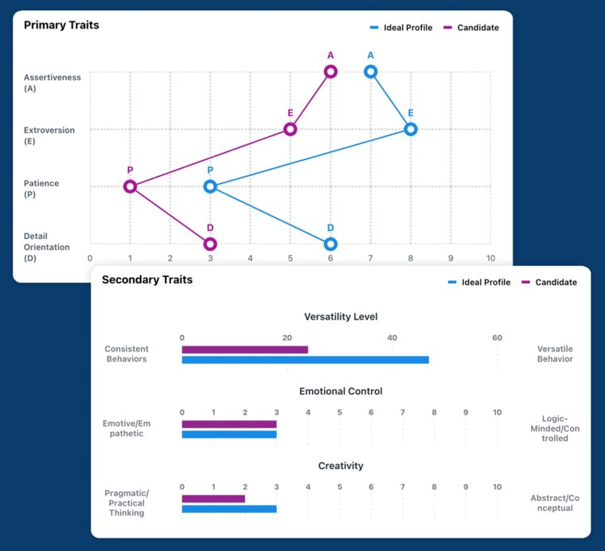
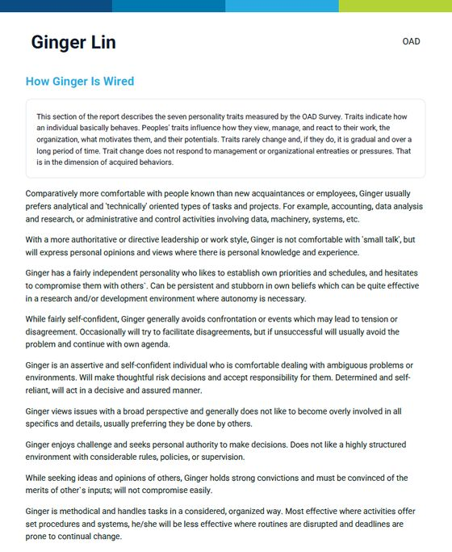
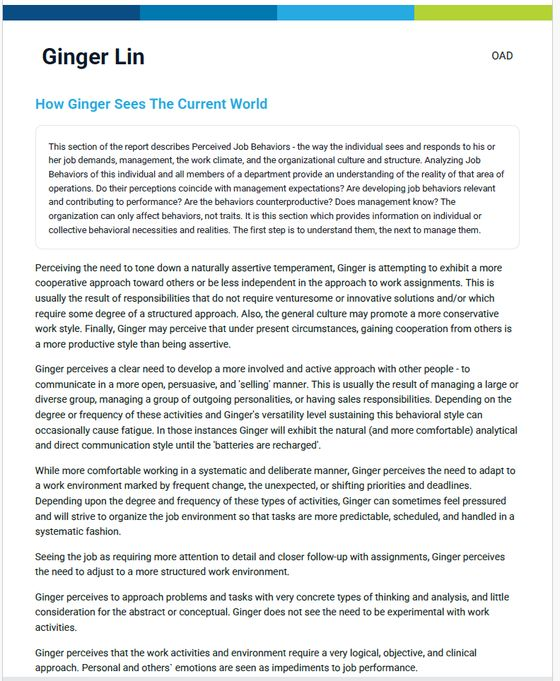
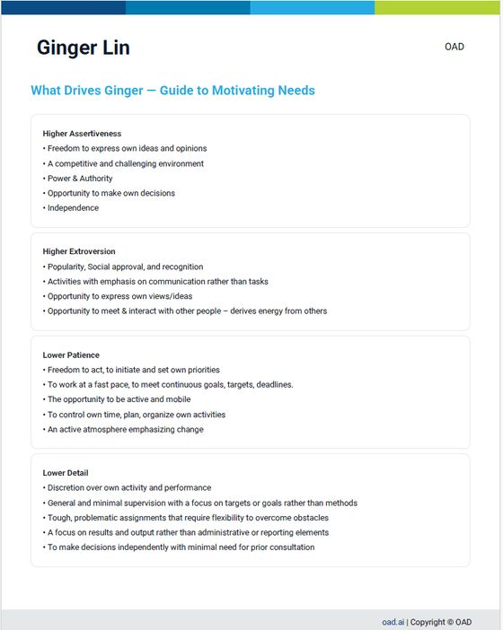

這些情況，是不是很熟悉？
「業績都靠那一兩個人，他一請假，整個月就難看。」
業績集中在少數人身上，等於把公司的營收，押在他們的去留上。
「我是公司最會賣的人，其他人都在等我下指令。」
老闆一個人扛成交，團隊習慣等答案。老闆越忙，團隊越不會自己判斷。
「把業績最好的人升主管，結果團隊業績反而掉了。」
他忙著自己搶單、對下屬沒耐心。公司同時失去一位頂尖業務，換來一位辛苦的主管。
「面試時很會講，進來三個月卻做不出業績。」
履歷證明他做過什麼，面試看到他怎麼表達，卻看不到他在壓力和拒絕下會怎麼做。
「送去上課回來很感動，兩週後一切照舊。」
課程教的是技巧，回到現場沒有人帶、心態也沒改變，行為很快就回到原點。
「主管知道每個人個性不同，卻不知道一對一要說什麼。」
測評報告做了、也看了，主管真正需要的是：明天見到他，第一句話怎麼開口。
問題通常不在業務不夠努力，
而在「人、位置與方法」沒有對齊。
天時地利，老闆控制不了；
人和，是唯一能經營的。
業務要成長，天時、地利、人和缺一不可。景氣和市場，老闆控制不了；唯一能經營的，是人和。而人和，來自四件事：
選對人
對的人，放在對的位置。
帶對人
主管知道每個人該怎麼帶，而且出發點是幫他成功。
傳得下去
頂尖業務願意教，團隊學得會。
價值認同
業務相信自己的角色，也相信產品真的能幫到客戶，自然願意主動開口成交。
大部分企業都試過這些方法。
問題不在不夠努力，而在方向。
| 一般企業的做法 | 盲點 | 第三方怎麼說 |
|---|---|---|
| 請 HR 安排評測、找管顧公司輔導，或送業務去上課 | HR 做足了功課，卻少了接手的人。報告需要主管看懂、用上，顧問與課程的建議需要有人在現場持續帶；少了這一段，報告只能進抽屜，顧問費也難看到成效。 | 訓練轉移研究一再指出：課程與建議能不能用在工作上，很大程度取決於回到職場後的環境，尤其是主管和同事的支持。Baldwin & Ford 模型 ↗ |
| 把業績最好的業務升主管 | 會銷售不等於會帶人 | 一份分析 214 家企業、超過 1,500 位升任主管業務的研究發現：個人業績越好越容易被升官，但他帶的部屬業績反而下滑；升任前業績每多一倍，部屬業績平均下降約 7.5%。Benson, Li & Shue｜NBER ↗ |
| 靠資歷和過去績效選主管 | 看不到帶人的天賦 | Gallup 指出，企業選錯主管人選的比例高達 82%；大約每 10 人只有 1 人具備高度帶人天賦。Gallup ↗ |
| 靠履歷和面試挑人 | 看不到他在工作裡會怎麼做 | 整合數十年選才研究的分析發現：跟工作直接相關的工具預測力最高；評量若以「在工作中」的情境作答，預測力也明顯較高。Sackett 等人 2022｜SIOP ↗ |
| 加獎金、壓 KPI | 短期拉高業績，長期推高流動率 | Gallup：替換一位員工的成本，約為他年薪的 0.5～2 倍；自願離職者中有 52% 認為，公司原本可以做些什麼讓他留下。Gallup ↗ |
| 請頂尖業務上台分享 | 他自己也說不清楚做對了什麼 | 哲學家 Polanyi 提出「隱性知識」：人知道的，比說得出來的多。 |
| 用 ChatGPT 等 AI 問「這個人該怎麼帶」 | AI 只知道您告訴它的，不認識這位成員 | 一份檢視五款主流 AI 助理的研究發現，AI 普遍會順著使用者表達的看法回答；主管若先入為主，AI 往往也跟著附和。彭博社以 GPT 對履歷排序測試數千次，也發現結果會因姓名暗示的族裔而出現偏差。再加上一般 AI 沒有這位成員的行為數據，給的多半是通用建議。Sharma 等人 2023｜arXiv ↗Bloomberg 2024 ↗ |
把明星球員，複製成明星球隊。
三個步驟，把一個人的業績，變成整個團隊的業績。
OAD 行為科學
約七分鐘的評測，看出「頂尖業務的樣子」和「好主管的樣子」。招募時比對應徵者，升遷前比對候選人，不再只靠面試和過去的業績猜。
OAD AI 帶人教練
主管描述成員的狀況，透過 OAD 的 AI 帶人教練，結合他的評測報告，給出一對一可以怎麼談、怎麼指導。Ginger 結合貴公司的溝通風格與文化，協助主管把這些建議說出口、引導成員優化。
Ginger 的 NLP 複製卓越策略Modeling Excellence
找出頂尖業務的成交心法，讓整個團隊都學得會。頂尖業務的祕訣，往往不在話術，也不在於肉眼觀察拆解出的步驟，而在他怎麼看客戶、怎麼判斷時機、心裡相信什麼。複製卓越策略透過觀察與深度提問，把這些連他自己都說不清楚的心法找出來，變成團隊能練、能學的能力。
再加上「從屬層級（Logical Levels）」，重建「我是誰」的自我身分認同，讓每個人從「我有可能做到嗎？」轉成「我要怎麼做到？」，從而改變心態、行為與結果。
很多頂尖業務不是不教，而是說不出來。複製卓越不是要他交出祕訣，而是陪他一起，把自己的成交心法整理出來。搭配帶有回報的制度設計，他從「怕被取代的人」，變成「團隊都在學的那個人」。
業績不再押在一兩個人身上，團隊績效整體提升。
你的成交力，升級為公司珍惜的資產。
和用人主管有了共同的語言與數據，也為 ESG 的人力資本揭露提供依據：S（社會）面的員工留任與培育成效，G（治理）面的關鍵人才與主管接班規劃。金管會持續強化上市櫃公司的永續揭露，人才決策有數據可佐證，已是趨勢。
為什麼是 OAD？
OAD 在歐美累積 38 年數據、超過 1,000 萬次評測，專為業務團隊設計：從挑人、升主管，到主管怎麼帶人，都有行為數據可以依循。
以頂尖業務為標準
請公司最頂尖的業務做一次約七分鐘的評測，他的輪廓就成為之後每位應徵者的比對標準。
看出誰適合升主管
避免把最會成交的人，放進不適合他的管理角色，同時失去一位頂尖業務、換來一位辛苦的主管。
不只看「他是誰」
同時看他自然的樣子，以及他認為工作要求他的樣子。兩者的差距，就是壓力與適應的訊號。
AI 帶人教練
結合成員的評測報告，產出一對一怎麼談、怎麼指導的具體建議，執行結果還能記錄回去，作為下次的參考。
主管簡報與登入摘要
幾秒內拿到任何一位成員的重點摘要；每次登入，自動整理誰完成了評測、哪些輔導計畫待處理。
介面友善
操作直覺、好上手，提供包含中文在內的多語言版本。
報告長什麼樣子




節錄自 OAD 官方示範報告英文原版，非受測者個人資料。資料來源：oad.ai/profile ↗
不再靠猜，會有什麼改變？
40 人業務團隊｜導入 OAD 前後
錯聘成本降低
每年省下 114 萬美金
40 人的業務團隊，錯聘率從 32% 降到 18%，以每錯聘一人損失 15 萬美金計算。（保守估計）
達標的業務變多
每年多 830 萬美金營收
達成目標的業務，從 41% 提升到 67%，以每位業務年度目標 80 萬美金計算。（依 OAD 客戶平均值）
新人更快上手
每位新人多創造 16 萬美金產值
上手時間從 7.2 個月縮短到 4.8 個月，等於每位新人每年多做 2.4 個月的業績。
以上為 OAD 官方公布的示範案例，金額以美國薪資水準計算，實際成效依企業狀況而異。想用台灣的數字估算，可以使用下方的 OAD 官方試算器。資料來源：oad.ai/vp-sales ↗

我不是您團隊裡最會賣的人。
但我知道，怎麼讓最會賣的那個人的方法，傳給整個團隊。
我在企業經營層身邊擔任幕僚 20 多年，也負責過人才發展。我每天的工作，就是解決老闆說出口與沒說出口的問題。服務老闆，思考的高度與角度，往往比服務客戶需要考量更多面向。
這些年，我看過很多中小企業靠一兩個人撐業績；升了最會銷售的人當主管，團隊卻開始掉業績；花錢上課，下課後一切回到原點。問題從來不是業務不努力，而是頂尖業務的方法，一直沒有被找出來、傳下去。
1. 理解老闆
20 多年經營層幕僚與人才發展經驗。理解老闆在意的優先順序，也理解一個決定要在組織裡推動，需要顧到哪些人、哪些環節。
2. 對人的洞察
多年在組織裡觀察人、發展人，再加上 NLP 專業執行師（美國 ABNLP）的訓練：
- 複製卓越策略（Modeling Excellence）：找出頂尖業務連自己都說不清楚的成交心法，讓每位員工都能成為公司的資產。
- 從屬層級（Logical Levels）：從「我是誰」開始改變業務對銷售的看法，讓每個人從「我有可能做到嗎？」轉成「我要怎麼做到？」。
- 結合 OAD 的行為科學數據，看懂每個人適合的位置與帶法。
NLP 在學術界仍有不同看法，所以我不談神奇效果，只用其中兩套經得起檢驗的方法：「複製卓越」的原理，與認知心理學用來萃取專家隱性知識的「認知任務分析」相近，整合研究顯示以這種方式設計的訓練成效相當顯著（Tofel-Grehl & Feldon, 2013）；「從屬層級」則是我在實務上，用來對齊信念與行為的架構工具。
3. 成交實戰與教練資格
師承 Dan Lok，具備高單價成交訓練教練資格，也有第一線銷售實戰經驗。合作企業可同時獲得我的高單價成交線上課程。
4. GPHR® 與就業服務專業
持有美國 HRCI 全球人力資源管理師（Global Professional in Human Resources，GPHR®）、勞動部就業服務乙級技術士證照。除了業務團隊，也能協助企業處理跨國人力配置與聘用；並可從學院培養的人才中，為企業引薦合適人選。
5. 專業形象
持有日本 KOZU Style 專業形象顧問認證，由 AICI 國際形象顧問協會（Association of Image Consultants International）日本分會前會長神津佳予子一對一授課。業務給客戶的第一印象，也是成交的一部分；從外在形象到內在認同，一起提升。
我把「資產型人才」的方法論系統化，寫成《把資歷變資產》。書裡不只寫給想讓經歷增值的工作者，也寫給想打造資產型人才團隊的經營者。
每家公司最珍貴的資產，往往是那一兩位頂尖業務；但他們的成交心法，常常跟著人一起離開。
作為頂尖業務複製顧問，我陪企業把這份卓越找出來、放大，傳給整個團隊。
OAD 看得準，Ginger 做得到。
OAD 的 AI 帶人教練，依每位成員的評測報告，給出一對一怎麼談、怎麼指導的建議。Ginger 再結合貴公司的溝通風格與文化，陪主管把建議落實到每天的帶人現場。
一位業務很拼，卻一直開發新客戶、遲遲不收尾，經過了解，是最近家裡剛有新生兒。主管描述狀況後，AI 帶人教練把問題拆成三個重點，各自附上可以怎麼談，才能兼顧公司與員工的處境。（示意情境，取自 OAD 官方產品示範）
| OAD 的角色 | Ginger 的角色 |
|---|---|
| 評測報告只是起點；沒有接下來的行動，再好的報告也只是一份文件。 | 幫主管問對問題：AI 的建議取決於狀況怎麼描述。Ginger 以外部顧問的客觀立場，把「他很不積極」這種抽象評價，換成具體的事實。 |
| 產出一對一的對話與指導建議 | 陪主管把話說出口：現場演練，修正語氣、時機與肢體表達，讓建議變成主管自己的話。 |
| 適用全球企業的行為科學建議 | 換成台灣職場聽得進去的說法：結合 20 年在企業主身邊的經驗，配合公司文化與企業主的期待調整。 |
| 處理「主管和某位特定部屬」的問題 | 讓整個團隊上下同欲：讓企業主、主管、業務的方向一致，並針對獎金與升遷路徑提出調整建議（例如「首席業務」制度），必要時與薪酬專業顧問協作。 |
| 針對行為和溝通給方向 | 補上成交力：高單價成交訓練，加上複製頂尖業務的成交心法。 |
導入時，Ginger 會先陪主管建立「幫助部門達標」的帶人出發點，並讓團隊清楚資料的用途。團隊信任工具，建議才能被聽進去，效果也最大。
工具讓主管更懂人，Ginger 讓效果落實。
以 50 人團隊為基礎，OAD 年度訂閱每個月不到 835 美金。
但，真正的成本，不是一份評測多少錢。
錯聘一位業務的代價，約是底薪的倍數
如果是高階主管，代價可達年薪的倍數
光是替換一位離職員工，就要花掉的年薪倍數
前兩項為美國選才顧問公司 Topgrading 的估計；第三項為 Gallup 的估計。
用 OAD 官方試算器，算算看您的公司
試算器為英文，金額以美金計。三個步驟就能填完：
- 職務類型選「Sales / Revenue」，填入團隊人數、一年離職人數。
- 平均底薪換算成美金填入（例如月薪 4.5 萬台幣，年薪約 1.7 萬美金）。
- 填入「新人第一年比熟手少做的業績」與毛利率，結果會即時算出。
錯升一位業務主管的代價（範例）
| 項目 | 算法 | 範例金額 |
|---|---|---|
| 他自己少做的業績 | 升任前每月毛利 20 萬，升任後只剩 3 成，持續 12 個月 | 168 萬 |
| 團隊業績下滑 | 6 位部屬 × 每人每月毛利 6 萬 × 下滑 7.5% × 12 個月 | 32.4 萬 |
| 多走一位部屬 | 年薪 54 萬 × 替換成本 0.5 倍 | 27 萬 |
| 合計 | 約 227 萬 |
以上為範例粗估，不是精算；下滑 7.5% 為研究平均參考值，請依實際狀況調整。
免費頂尖業務報告診斷乙次
已為台灣企業申請到「頂尖業務免費輪廓分析」乙名：請貴公司最頂尖的業務完成約七分鐘的評測，24 小時內取得報告，再由 Ginger 為您解讀，找出值得複製的關鍵特質。不需要提供信用卡，也不需要任何合作承諾。
申請對談不是先決定導入工具，
而是先確認真正需要處理的問題。
填寫企業現況
提供公司與團隊規模、目前的人才課題、涉及職位，以及已使用的測評或人才制度。
進行線上對談
以30～45分鐘了解問題目前如何被看見、現有資料能回答什麼，以及還缺少哪些關鍵資訊。
提出下一步建議
可能結果：
- 暫時不需要導入評測
- 先釐清職務或管理問題
- 選擇小規模對象進行評測與解讀
- 進一步規劃人才盤點、團隊或接班應用
您可能想先知道
可以只使用 Ginger 的服務，不導入 OAD 嗎？
可以。例如企業內訓或工作坊、複製頂尖業務的成交心法、高單價成交訓練，都可以單獨進行。差別在於少了行為數據，選人、升主管與帶人的客觀判斷，會更依賴現場觀察與訪談。
OAD 與 Ginger 結合，跟單獨使用 OAD 有什麼不同？
單獨使用 OAD，企業拿到的是行為數據與建議，接下來要靠企業自己落實。結合 Ginger，您將會得到這幾件事：
- 幫主管問對問題：Ginger 運用 NLP 的框架提問訓練，把「他很不積極」這種抽象評價，換成具體的事實，讓建議更精準。
- 陪主管把話說出口：結合高單價成交教練的實戰訓練，以及日本 KOZU Style 專業形象顧問的專業，現場演練一對一，修正語氣、時機與肢體表達。
- 換成貴公司聽得進去的做法：以 20 年經營層幕僚的經驗，配合公司文化與企業主的期待調整。
- 獎金與升遷路徑的調整建議：以 GPHR® 全球人力資源管理師的薪酬與人才管理專業，提出例如「首席業務」制度的建議，必要時與薪酬專業顧問協作。
- 補上成交力：以 NLP 專業執行師的複製卓越策略，找出頂尖業務的成交心法，再加上師承 Dan Lok 的高單價成交訓練。
OAD 的 AI 帶人教練，跟 ChatGPT 或企業版 AI 有什麼不同？
一般 AI 只能根據使用者描述的內容回答，不認識這位成員，給的多半是通用建議。OAD 的 AI 帶人教練則以這位成員的評測結果與 OAD 38 年的行為科學模型為基礎，會追問細節，並把每次執行的結果記錄下來，作為下次的參考。
更重要的是，每一次評測與輔導紀錄，都會累積成企業自己的人才數據：誰適合什麼位置、怎麼帶最有效、誰正在成長。培養資產型人才，靠的是長期累積的數據，而不是每次憑感覺重新開始。這些數據會隨時間增值，是對企業長期成長的正確投資。
企業可以自己使用 OAD 的 AI 帶人教練嗎？
可以申請。AI 帶人教練開放給完成 OAD 原廠訓練並通過認證的使用者，取得資格後，每年需持續進修以維持資格。若貴公司希望由內部主管或 HR 直接使用，可以在對談時提出，Ginger 會協助說明申請方式。
為什麼要用行為科學，而不是看履歷和面試就好？
履歷記錄的是一個人做過什麼，面試看到的是他當下怎麼表達。整合數十年選才研究的分析發現，和工作直接相關、以「在工作中會怎麼做」為出發點的評量，預測力明顯較高。OAD 用的正是這種方式，看的是一個人在工作情境中的行為傾向。
OAD 和一般評測有什麼不同？
市面上的評測，多半擅長描述一個人是什麼類型、溝通風格如何，或是領導上可能有哪些盲點。OAD 的差別在三個地方：
- 專為業務型團隊設計：以公司自己的頂尖業務為標準，比對應徵者與升遷人選，直接對應業績與成交。
- 不只看「他是誰」：同時看他自然的樣子，以及他認為工作要求他的樣子，用兩者的差距看出壓力、適應與離職風險，而不是貼一個類型標籤。
- 不只是一份報告：OAD 是一整套協助企業主與主管管理的指導系統，從評測、AI 帶人教練、主管簡報到後續追蹤，讓報告真正用在每天的帶人現場。
報告會呈現什麼？
報告會呈現這位成員天生的做事方式、他目前正在怎麼調整自己、什麼樣的環境與授權最能驅動他，以及他和該職務理想特質之間的差距。上方「報告長什麼樣子」有官方示範報告的節錄。
OAD 可以直接判斷一個人是否適任嗎？
不建議用任何單一測評斷定人才是否適任。OAD 提供的是和工作動機相關的行為資料，仍需搭配職務要求、專業能力、績效證據、結構化面談，以及 HR 與用人主管的判斷。
1,000 萬筆資料多是歐美的數據，適合華人或亞洲企業嗎？
華人看人，從來不是非黑即白的二分法。《易經》談了數千年的陰陽變化，儒家講中庸，關注的都是一個人如何因時因地調整自己。OAD 的設計正好接近這種看法：它不用選擇題或是非題，而是請受測者從一組形容詞中，挑出最符合自己的詞，看的是一個人在不同情境下如何動態調整，而不是把人一次歸類。這種「強迫選擇」的作答方式，也是心理測量學界用來降低不同文化作答習慣差異的方法之一。當然，文化差異仍需要留意；OAD 官網並未公開亞洲樣本的詳細比例，建議在對談時依貴公司實際使用族群進一步確認。
評測需要多久？有中文介面嗎？
約七分鐘，題目採選詞形式作答，建議在不被打斷的情況下完成。OAD 提供包含中文在內的多語言版本，介面與題目都可以切換為中文。
導入費用很高嗎？
OAD 依團隊規模與使用量提供年度方案，50 人團隊的基礎方案為每年一萬美金。比起投資金額，更值得先釐清的是：一次錯誤招募、一次錯誤升遷，或一位關鍵人才的流失，實際會讓您付出多少成本。您可以先用上方的 OAD 官方試算器大致估算。OAD 官方方案說明 ↗
有免費試用嗎？
已為台灣企業申請到「頂尖業務免費輪廓分析」乙名（Free Top Performer Profile）。完成評估只需七分鐘，24 小時內即可取得結果，不需要提供信用卡，也不需要任何合作承諾。
頂尖業務會不會不願意分享？
會，這是人之常情。所以我們不要求他無私，而是讓分享對他更有利：帶人有回報、傳承有舞台。
預約線上對談，會被推銷嗎？
不會。對談會先了解您目前的人才課題、企業規模與既有制度，協助釐清問題出在能力、管理方式，還是人才配置。只有在評測確實能補足現有資訊時，才會討論後續應用方式。
評測資料會如何被使用？能與公司原本的系統整合嗎？
資料僅用於約定的評測、解讀與人才管理討論，不會在未經同意的情況下提供給無關第三方。若正式導入，企業也應事先向參與者說明評測目的、使用範圍與資料保存方式。OAD 可依方案提供 ATS／HRIS 系統整合，實際串接方式會在對談中依貴公司現有系統確認。
在投入更多招募、培育與留才成本以前，
先確認問題到底在哪裡。
如果您還不確定，現在面對的是能力問題、管理問題，還是人才配置問題，可以先透過一場線上對談，整理現況與需要補足的資訊。
預約線上對談適合50人以上，正準備進行關鍵人才盤點、接班布局、關鍵招募或組織調整的部門或企業。
您提供的資料只用於本次需求判斷與對談安排；未經同意，不會提供給其他單位，也不會以評測結果取代企業的用人判斷。